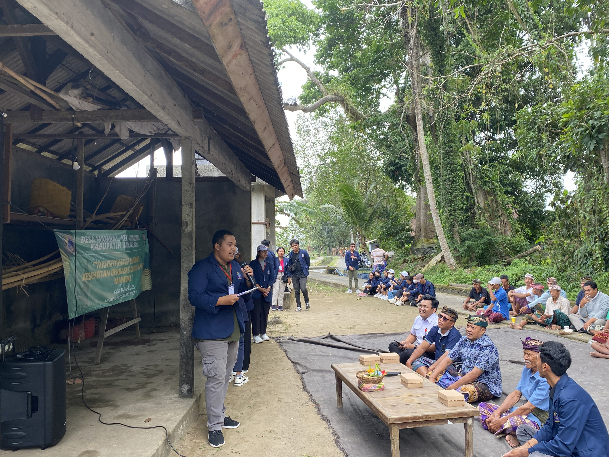

Subak adalah sebuah organisasi kemasyarakatan yang memegang peran sentral
dalam mengatur
sistem pengairan sawah untuk pertanian di Bali. Salah satu Subak yang menjadi fokus
program kerja ini adalah Subak Munduk Semena yang berlokasi di Banjar Semena, Desa
Mambal, dengan anggota terdiri dari 80 petani.
Edukasi Mindfulness dan Ergonomi untuk Petani:
Program Kerja Subak Digital, yang sukses dilaksanakan pada tanggal 6 September 2023,
mengusung tema "Edukasi Mindfulness dan Ergonomi untuk Petani." Program ini bertujuan
memberikan solusi bagi petani dalam menghadapi dua tantangan utama: stres dan risiko
cedera fisik. ...
Ergonomi:
Sesi pertama materi edukasi membahas tentang ergonomi bagi petani dan dipresentasikan
oleh mahasiswa program studi fisioterapi. Materi ini mencakup pentingnya memahami postur
tubuh yang benar selama bekerja dan bagaimana menjaga postur tubuh yang baik. Selain
itu, sesi ini juga mencakup praktek cara mengangkat beban dengan benar.
Mindfulness:
Sesi kedua membahas penanganan stres melalui teknik mindfulness dan dipresentasikan oleh
mahasiswa psikologi. Materi ini membahas konsep stres, jenis-jenis stres, dan cara
mengatasinya. Para peserta diajak untuk melakukan teknik mindfulness dengan metode
grounding 5-4-3-2-1.
Adapun hasil produksi dari pertanian
Hasil Produksi Pertanian:
Hasil produksi pertanian seperti padi, jagung, cabai, dan bunga pacah
menjadi bagian integral dalam upaya meningkatkan kesejahteraan masyarakat. Tanaman-tanaman ini telah
dikelola dengan baik oleh petani setempat, menciptakan hasil pertanian yang berkualitas dan mendukung
ketahanan pangan. Hasil pertanian ini juga memberikan manfaat ekonomi yang positif bagi komunitas,
meningkatkan pendapatan petani serta memberikan kontribusi dalam memajukan ekonomi lokal. Pertanian
yang
berkelanjutan dan produktif dapat
berperan penting dalam meningkatkan kesejahteraan masyarakat dan menggerakkan perkembangan ekonomi di
daerah tersebut.
Petani dapat memanfaatkan hasil produksi pertanian seperti padi, jagung, cabai, bunga pacah tersebut
agar ekonomi semakin berkembang dengan cara-cara berikut:
Meningkatkan produktivitas dan kualitas hasil pertanian.
Hal ini dapat dilakukan dengan menerapkan teknik budidaya yang tepat, menggunakan benih unggul, dan
melakukan perawatan yang intensif.
Melakukan diversifikasi tanaman.
Petani tidak hanya mengandalkan satu jenis tanaman saja, tetapi juga
menanam berbagai jenis tanaman untuk mengurangi risiko kerugian akibat kegagalan panen.
Melakukan pengolahan hasil pertanian.
Hasil pertanian yang diolah memiliki nilai jual yang lebih tinggi
daripada hasil pertanian segar.Padi dapat diolah menjadi berbagai produk, seperti beras, tepung beras,
kerupuk, dan mie.
Jagung dapat diolah menjadi berbagai produk, seperti jagung manis, tepung jagung.
Cabai dapat diolah menjadi berbagai produk, seperti sambal, saus, dan keripik cabe Padi dapat diolah
menjadi berbagai produk, seperti beras, tepung beras, kerupuk, dan mie.
Jagung dapat diolah menjadi berbagai produk, seperti jagung pipil, jagung manis, tepung jagung, dan
tortilla.
Cabai dapat diolah menjadi berbagai produk, seperti sambal, saus, dan keripik.
Bunga pacah dapat diolah menjadi berbagai produk, seperti salah satunya teh bunga pacah.
Memperluas pasar. Petani tidak hanya menjual hasil pertaniannya di pasar lokal, tetapi juga memperluas
pasar ke wilayah yang lebih luas, bahkan hingga ke luar negeri dengan cara bekerja sama dan mencari
mitra kerja yang ingin maju bersama-sama.
Manfaat bagi Petani:
Manfaat bagi petani adalah pemahaman mereka tentang postur tubuh yang benar saat bekerja
untuk menghindari cedera fisik serta kemampuan mereka dalam mengurangi kecemasan melalui
teknik grounding. Dengan pengetahuan ini, para petani dapat bekerja dengan lebih efisien
dan aman.
Manfaat bagi Pembaca:
Artikel ini juga bermanfaat bagi pembaca yang dapat mengambil pelajaran tentang
praktik yang benar saat melakukan aktivitas fisik. Postur tubuh yang benar dan teknik
mengatasi stres adalah pengetahuan yang dapat diterapkan dalam berbagai aspek kehidupan
sehari-hari.
Melalui Program Kerja Subak Digital ini, Subak Munduk Semena menunjukkan komitmen mereka
untuk meningkatkan kesejahteraan petani dan memberikan edukasi yang bermanfaat bagi
masyarakat. Dalam dunia pertanian yang berat, investasi dalam kesejahteraan petani
adalah langkah yang sangat penting untuk masa depan yang lebih baik.